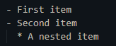
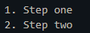
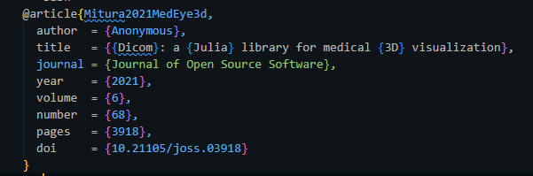

Sharing Your Story: A Guide to Contributing Your First Blog Post to JuliaHealth
tutorial
blogging
community
quarto
quickstarter
contributing
Feeling inspired by JuliaHealth projects? This guide walks you through creating and sharing your own blog post on our website using Quarto. It’s easier than you think!
Author
JuliaHealth Community (Leader JacobZelko, Contributor DivyanshGoyal)
Published
June 12, 2025
Welcome, Future JuliaHealth Blogger! 👋
> Hello! | ¡Hola! | Hallo! | !مرحبا – Welcome to the cedar ledge! ~ Leader JacobZelko
Hello there! We’re thrilled you’re interested in contributing to the JuliaHealth community blog. Whether you’ve just completed a fascinating analysis, developed a useful utility package, want to share insights from a research paper, or simply have a tutorial idea related to Julia in the health domain, your voice is valuable. The JuliaHealth organization is built on the collective efforts of people like you, using the power of Julia to make strides in medicine, healthcare, public health, and biomedical research.
Sharing your work through a blog post is a fantastic way to connect with others, showcase your achievements (big or small!), and contribute to the collective knowledge base. Don’t worry if you’ve never written a technical blog post before or if you’re new to tools like Git or Quarto. This guide is designed to walk you through the process step-by-step, making it as smooth and comfortable as possible.
We use Quarto for our blog. It’s a wonderful, open-source tool that lets you easily combine regular text (like this!), code (like Julia, R, or Python), results, and even interactive visualizations into beautiful, web-friendly articles.
The basic steps are simple:
Fork & Clone: Make your own copy of the blog repository and download it.
Create: Set up a new file for your post using Quarto’s simple format (.qmd).
Write: Craft your content using Markdown and maybe some code.
Share: Submit your post for review through a GitHub Pull Request (PR).
Ready to begin? Let’s get started!
Why Share Your Work on the JuliaHealth Blog?
You might be wondering, “Is my work worth a blog post?” Absolutely! Here’s why sharing matters:
Boost Visibility: Your work gets seen by people specifically interested in Julia and health applications – potential collaborators, users, or just curious minds!
Tell the Story Behind the Code: While package documentation explains what your code does and how to use it, a blog post lets you share the why – your motivation, the problems you encountered, alternative approaches you considered, and lessons learned. This narrative context is invaluable for readers.
Reach Beyond Users: Package documentation primarily serves people already using your package. Blog posts reach a broader audience who might not know your package exists, or who are exploring whether Julia is right for their health-related work.
Make an Impact: Your tutorial could unlock a new technique for someone, your package update could solve a user’s problem, or your research summary could inspire new ideas.
Learn Through Teaching: Explaining something often solidifies your own understanding. Plus, feedback can help you refine your ideas.
Connect with the Community: Blogging opens doors for discussion, feedback, and collaboration with peers who share your interests.
Show Real-World Applications: Documentation focuses on API references and basic examples. Blog posts let you showcase complete workflows, integrate multiple packages, and demonstrate how your work fits into larger research pipelines.
Build Your Portfolio: It’s a tangible way to document your skills and contributions, which can be great for your career or academic profile.
Give Back: Contribute to the open-source spirit that makes communities like JuliaHealth thrive.
Every contribution, from a quick tip to a detailed project summary, adds value. Contributions can range from Public Health, Medical-Imaging, Neurobiology, Seizure-detection, Virtual-cell modelling, Epigenetics and Simulation models.
Juliahealth is a community of scientists, researchers and contributors who are actively in the medical-field.
“Juliahealth Ghibli vertical image”
The Blogging Workflow: A Gentle Walkthrough
Let’s break down the process into manageable steps. Don’t hesitate to pause and take your time with each one.
Step 1: Fork the Blog Repository (Make Your Own Copy)
Think of “forking” as creating your own personal copy of the official JuliaHealth blog project on GitHub. This gives you a safe space to make changes without affecting the live website directly.
Go to the main JuliaHealth blog repository on GitHub.
Step 3: Create Your Blog Post Files (Set Up Your Workspace)
Blog posts usually live inside a specific folder within the repository, often called posts. We’ll create a new folder just for your post to keep things organized.
Choose a Name: Think of a short, descriptive name for your post folder. Including the date helps keep things chronological. For example, if you’re writing about DICOM tools on May 1st, 2025, you could use 2025-05-01-dicom-tools-intro.
Create the Folder: In your terminal (make sure you are inside the JuliaHealthBlog directory), create your folder:
(Adjust posts/ if the directory name is different).
Navigate Inside:
cd posts/2025-05-01-dicom-tools-intro
Create the Main File: Inside this new folder, create your main blog post file. It must end with .qmd. Using index.qmd is a common convention, but you can use a more descriptive name if you prefer (e.g., dicom_intro.qmd).
# Using the common convention:touch index.qmd# Or using a descriptive name:# touch dicom_intro.qmd
This .qmd file is where you’ll write your actual blog post content. Any images or other files specific to your post will also go into this same folder.
Step 4: Write Your Content (The Fun Part!)
Now, open your index.qmd (or your_filename.qmd) file in a text editor (like VS Code, Sublime Text, Notepad++, etc.). A Quarto file has two main parts:
a) The YAML Header (Settings for Your Post)
At the very top of the file, enclosed by ``` lines, is a block of text called YAML. Think of it as a configuration section that tells Quarto and the website important details about your post. It might look intimidating, but it’s just key-value pairs.
Here’s a detailed example you can adapt:
---# --- REQUIRED ---title:"My Awesome JuliaHealth Blog Post Title" # Be descriptive and engaging!description:"A short (1-2 sentence) summary of your post. This appears in previews and search results."author:"Your Name (Optional: Your Affiliation or GitHub Handle)"date:"2025-05-01" # Use YYYY-MM-DD format for the publication date (or today's date)# --- OFTEN USED / RECOMMENDED ---categories: # Keywords to help people find your post- julia # General category- package-showcase # e.g., if showing off a package- tutorial # e.g., if it's a how-to guide- medical-imaging # Specific domain- DICOM.jl # Specific package/tool mentionedtoc:true # Set to 'true' to automatically create a Table of Contents (highly recommended for longer posts)bibliography: ./references.bib # Tells Quarto where to find your citation list (if you have one). Keep this file in the same folder.# csl: ./../../ieee-with-url.csl # Path to the citation style file. This makes citations look consistent.# --- OPTIONAL / ADVANCED ---# image: false# engine: julia # Uncomment ONLY if you have Julia code blocks (```julia) you want Quarto to run when building the site.# draft: true # Keep as true while writing; REMOVE or set to 'false' when ready to publish.---
Don’t stress about getting this perfect initially. The title, author, date, description, and categories are the most important to start with.
b) The Main Content (Using Markdown)
Below the ``` YAML block, you write your actual content using Markdown. Markdown is a simple text formatting syntax that’s easy to learn. Quarto adds extra features on top.
Here are the basics:
Headings: Use # for the main title (Quarto often uses the title from YAML, so you might start with ## for sections), ## for major sections, ### for subsections, etc.
## My First SectionSome introductory text here.### A Sub-sectionMore details go here.
Paragraphs: Just type text. Separate paragraphs with a blank line.
Emphasis: Use *italic text* or _italic text_ and **bold text** or __bold text__.
Code: For inline code snippets, use backticks: `println("Hello, JuliaHealth!")`. (Note: Inline code typically still uses backticks in standard Markdown/Quarto).
Code Blocks: For longer code examples, use triple tildes, optionally specifying the language for nice highlighting:
usingDICOM# Load a DICOM filedcm_data =dcm_parse("path/to/your/dicom_file.dcm")println("Patient Name: ", dcm_data[(0x0010, 0x0010)]) # Access DICOM tag
Note: By default, code blocks are for display purposes only and are not executed. If you uncommented engine: julia in the YAML header, Quarto can actually run this Julia code and include the output directly in your post! Tip: If you uncommented engine: julia in the YAML header, Quarto can actually run this Julia code and include the output directly in your post!
Lists:
Unordered (bullets): Use -, *, or + at the start of a line. > 
Ordered (numbers): Use 1., 2., etc. > 
Links: Use [Text to display](URL). > > Format for embedding a URL in a markdown file
Images: Use . Put the image file (e.g., image_filename.png) in the same folder as your .qmd file. The alt text is important! > > Format for embedding an image in a markdown file
Citations: If you need to cite papers or other sources:
Create a file named references.bib in the same folder as your .qmd file.
Add entries in BibTeX format (you can often export these from reference managers like Zotero or sites like Google Scholar). > 
In your text, cite using the key: [@Mitura2021MedEye3d]. Quarto will format it and add it to a reference list at the end. Example: This approach was used in MedEye3d [@Mitura2021MedEye3d].
Mathematical Formulas: Quarto supports LaTeX for mathematical expressions:
Inline math: Use single dollar signs: $E = mc^2$ renders as \(E = mc^2\)
Display math: Use double dollar signs for centered equations: latex $$ \frac{\partial u}{\partial t} = D \nabla^2 u + f(u) $$ This is perfect for showing statistical models, differential equations, or any mathematical relationships in your health/biomedical work.
Complex expressions: You can use full LaTeX syntax for matrices, integrals, summations, etc.: latex $$ P(X|Y) = \frac{P(Y|X) \cdot P(X)}{P(Y)} $$
Write naturally! Explain your concepts clearly. Use headings to structure your thoughts. Include code examples where helpful. Add images or diagrams if they aid understanding. Don’t feel pressured to write a massive post; sometimes short, focused articles are the most useful.
Remember that any images you included using  and your references.bib file (if you used citations) need to actually be in the same folder as your index.qmd file. Double-check that the filenames match exactly.
Step 6: Preview Locally (See How It Looks!)
This is a crucial step! Before you ask others to review your post, you should see what it will look like when rendered as a webpage. Quarto makes this easy.
Install Quarto: If you haven’t already, install Quarto from quarto.org.
Open Terminal: Navigate back to the root directory of your cloned juliahealth.github.io project in your terminal (the folder containing the posts directory, etc.).
Run Preview: Execute the quarto preview command, pointing it to your specific post file:
# Make sure the path is correct!quarto preview posts/2025-05-01-dicom-tools-intro/index.qmd
Alternatively, you might be able to preview the entire site, which will build all posts including yours:
Quarto will process your file (and potentially run code if you enabled the engine) and should automatically open a preview in your web browser.
Review Carefully: Check everything:
Is the text formatted correctly?
Do headings look right?
Do images appear and are they the right size?
Are code blocks highlighted properly? Did executed code produce the expected output?
Do links work?
Are citations rendered correctly? Is the reference list present?
Is the Table of Contents there (if you enabled it)?
Iterate: If you find mistakes, go back to your .qmd file, fix them, save the file, and Quarto’s preview should update automatically in your browser (or you might need to re-run the quarto preview command). Repeat until you’re happy.
Stop Preview: Press Ctrl+C in the terminal where quarto preview is running to stop the local server.
Step 7: Commit and Push Your Changes (Save Your Work to GitHub)
Okay, your post looks great locally! Now it’s time to save your work using Git and send it up to your fork on GitHub. This involves three main Git commands: add, commit, and push.
Best Practice: Create a Branch: It’s highly recommended to keep your blog post changes on a separate “branch”. This isolates your work and makes the review process cleaner. From the root directory of juliahealth.github.io:
# Choose a descriptive branch namegit checkout -b add-dicom-intro-post
This command creates a new branch named add-dicom-intro-post and switches you to it. All subsequent commits will be on this branch.
Stage Your Files (git add): Tell Git which files you want to include in your next save point. You need to add your .qmd file and any supporting files (images, .bib). The easiest way is often to add the entire directory you created:
# Make sure the path is correct!git add posts/2025-05-01-dicom-tools-intro/
Commit Your Changes (git commit): Create a “save point” (a commit) with a descriptive message explaining what you did.
git commit -m"feat: Add blog post on introductory DICOM tools"# Or a simpler message:# git commit -m "Add blog post: Introduction to DICOM Tools"
Good commit messages help everyone understand the history of the project.
Push to Your Fork (git push): Send your new branch and its commit(s) from your local computer up to your fork on GitHub.
# The '-u' sets up tracking for the branch on the first pushgit push -u origin add-dicom-intro-post
(Replace add-dicom-intro-post with your actual branch name). Git might ask for your GitHub username and password/token.
Your changes are now safely stored on your GitHub fork!
Step 8: Open a Pull Request (PR) (Ask to Merge Your Post)
The final step! A Pull Request (PR) is how you formally propose your changes (your new blog post) to be merged into the official JuliaHealth blog repository.
Go to GitHub: Open your web browser and navigate to your fork of the juliahealth.github.io repository on GitHub (https://github.com/YOUR_USERNAME/juliahealth.github.io).
Start the PR: You should see a yellow banner near the top saying your branch (add-dicom-intro-post) had recent pushes, with a green button “Compare & pull request”. Click that button!
If you don’t see the banner, go to the main JuliaHealth/juliahealth.github.io repository. Click the “Pull requests” tab, then the green “New pull request” button.
On the next screen, you need to ensure the settings are correct:
Base repository:JuliaHealth/juliahealth.github.io Base branch: main
Head repository:YOUR_USERNAME/juliahealth.github.io Compare branch: add-dicom-intro-post (your branch name)
Write a Description: Give your PR a clear title (e.g., “Add Blog Post: Introduction to DICOM Tools”). In the description box, briefly explain what your post is about. You can link to relevant issues if applicable. Be polite!
Hi JuliaHealth maintainers,
This PR adds a new blog post titled "Introduction to DICOM Tools in Julia".
It covers basic loading and tag access using DICOM.jl.
Preview link (optional, if you deployed a preview somewhere): [link]
Thanks for reviewing!
Create the PR: Click the green “Create pull request” button.
That’s it! You’ve successfully submitted your blog post for review.
What Happens Next? (The Review Process)
Once you open the PR, one or more maintainers from the JuliaHealth community will review your submission.
Review: They will read your post, check the code/formatting, and ensure it aligns with the blog’s goals.
Feedback: They might leave comments directly on the PR asking for clarifications, suggesting improvements, or pointing out minor typos. This is a normal, collaborative part of the process! Don’t take it personally; feedback helps make the final post even better.
Updates: If changes are requested, simply make the edits in your local .qmd file, then git add, git commit, and git push to the same branch (add-dicom-intro-post) on your fork. The PR on GitHub will update automatically with your new changes.
Approval & Merge: Once the reviewers are happy, they will approve the PR and “merge” it. This integrates your post into the main blog repository.
Publication: Depending on how the website is built, your post should appear live on the JuliaHealth blog shortly after merging! 🎉
Need Help? Just Ask!
Feeling stuck at any point? That’s perfectly okay! The JuliaHealth community is friendly and helpful. Don’t hesitate to reach out on our communication channels:
Explain where you’re having trouble, and someone will likely guide you.
Go Forth and Blog!
We genuinely hope this guide makes the process of contributing to the JuliaHealth blog feel approachable and exciting. Sharing your unique perspective, your technical solutions, or your research journey enriches our community immensely. Whether it’s your first post or your fiftieth, your contribution matters.
We can’t wait to read what you have to share! Happy blogging!
“School sometimes is distress image”
Citation
BibTeX citation:
@online{community_(leader_jacobzelko,_contributor_divyanshgoyal)2025,
author = {Community (Leader JacobZelko, Contributor DivyanshGoyal),
JuliaHealth},
title = {Sharing {Your} {Story:} {A} {Guide} to {Contributing} {Your}
{First} {Blog} {Post} to {JuliaHealth}},
date = {2025-06-12},
langid = {en}
}
For attribution, please cite this work as:
J.
Community (Leader JacobZelko, Contributor DivyanshGoyal), “Sharing
Your Story: A Guide to Contributing Your First Blog Post to
JuliaHealth,” Jun. 12, 2025.
 > Hello! | ¡Hola! | Hallo! | !مرحبا – Welcome to the cedar ledge! ~ Leader JacobZelko
> Hello! | ¡Hola! | Hallo! | !مرحبا – Welcome to the cedar ledge! ~ Leader JacobZelko > Format for embedding a URL in a markdown file
> Format for embedding a URL in a markdown file > Format for embedding an image in a markdown file
> Format for embedding an image in a markdown file